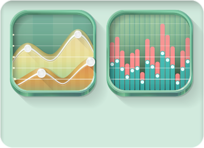

<div class="page stats" ng-controller="stats as vm">
  <!-- <div class="row">
    <div class="col-md-12">
      <h2 class="page-title ng-scope" translate="">Статистика</h2>
    </div>
  </div>
  <div class="row">
    <div class="col-md-12">
      <section class="widget">
        <header class="stats-header">
          <datepicker type="daterange" locale="vm.datePickerTexts" format="DD.MM.YYYY" opens="left" ranges="vm.dateRanges" ng-model="vm.chartDateRange">
            <i class="fa fa-calendar fa-lg"></i>
            <span translate>Уточнить интервал</span>
            <b class="caret"></b>
          </datepicker>
          <select name="interval" ng-model="vm.interval">
            <option value="1">День</option>
            <option value="7">Неделя</option>
            <option value="30">Месяц</option>
          </select>
        </header>
        <div style="width: 100%; height: 400px">
          <linechart data="vm.data" options="vm.options" mode="">
          </linechart>
        </div>
        <div class="date-slider">
          <div class="minichart">
            <linechart data="vm.miniData" options="vm.miniOptions" mode="">
            </linechart>
          </div>
          <div id="slider">
          </div>
        </div>
      </section>
    </div>
  </div> -->
  <div class="row">
    <div class="col-md-12">
      <div class="stats-icons">
        <p>
          Активно записывайте свои расходы, и скоро увидите статистику!
        </p>
        
      </div>
    </div>
  </div>
</div>
